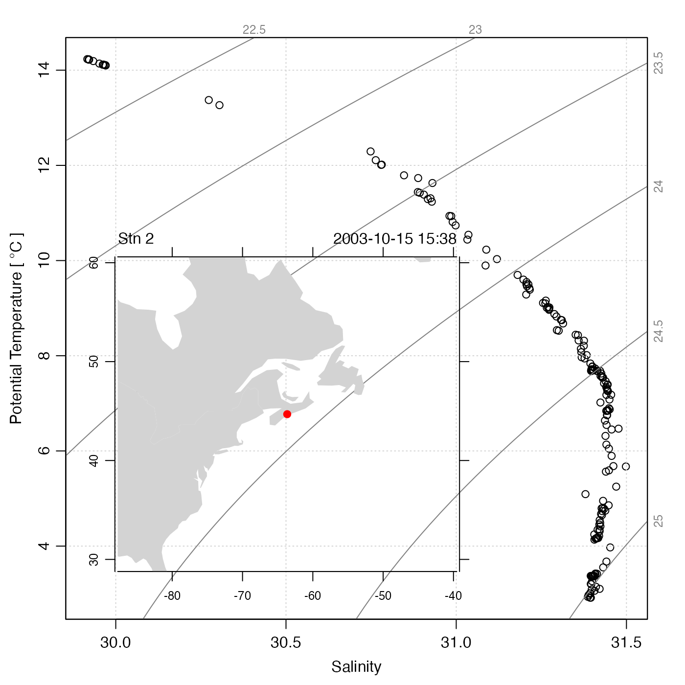

Adds an inset diagram to an existing plot. Note that if the inset is a map
or coastline, it will be necessary to supply inset=TRUE to prevent
the inset diagram from occupying the whole device width. After
plotInset() has been called, any further plotting will take place
within the inset, so it is essential to finish a plot before drawing an
inset.
location of left-hand of the inset diagram, in the existing
plot units. (PROVISIONAL FEATURE: this may also be "bottomleft", to
put the inset there. Eventually, other positions may be added.)
location of bottom side of the inset diagram, in the existing plot units.
location of right-hand side of the inset diagram, in the existing plot units.
location of top side of the inset diagram, in the existing plot units.
An expression that draws the inset plot. This may be a single plot command, or a sequence of commands enclosed in curly braces.
margins, in line heights, to be used at the four sides of the inset diagram. (This is often helpful to save space.)
a flag that turns on debugging. Set to 1 to get a moderate amount of debugging information, or to 2 to get more.
library(oce)
# power law in linear and log form
x <- 1:10
y <- x^2
plot(x, y, log='xy',type='l')
plotInset(3, 1, 10, 8,
expr=plot(x,y,type='l',cex.axis=3/4,mgp=c(3/2, 1/2, 0)),
mar=c(2.5, 2.5, 1, 1))
# CTD data with location
data(ctd)
plot(ctd, which="TS")
plotInset(29.9, 2.7, 31, 10,
expr=plot(ctd, which='map',
coastline="coastlineWorld",
span=5000, mar=NULL, cex.axis=3/4))
